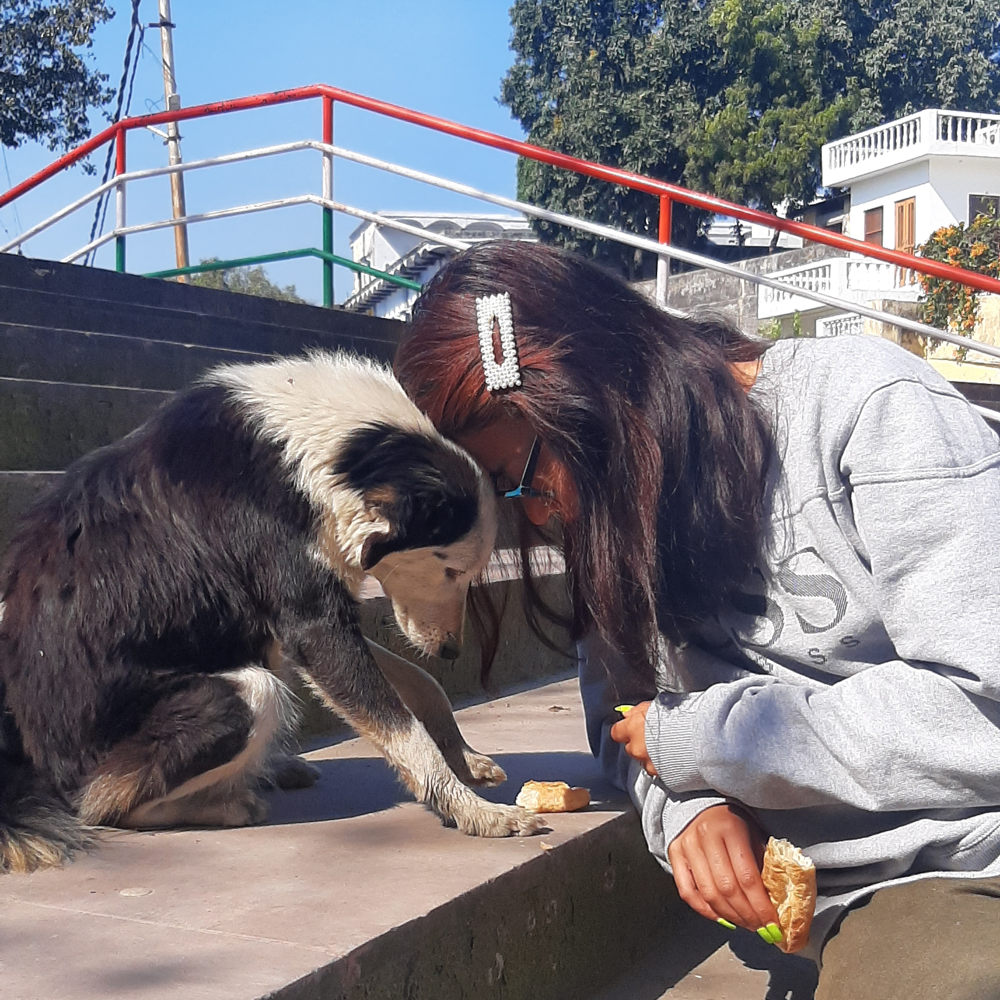

"Samarth India Charitable Trust is a compassionate shelter home dedicated to the welfare of stray animals. As a beacon of hope, our organization tirelessly works to provide aid, medical care, and rehabilitation for injured and distressed animals across the community. Our commitment extends beyond rescue, as we strive to educate the public on the importance of kindness and responsible pet ownership. Through our efforts, we aim to create a safer, more compassionate world where every stray animal finds love, respect, and a chance at a new life."
With a robust network of volunteers, veterinarians, and animal care professionals, we provide comprehensive care—from emergency medical treatment to long-term rehabilitation programs. Beyond immediate care, we engage the community through educational initiatives aimed at fostering a culture of respect and empathy towards animals. We advocate for stronger animal rights, responsible pet ownership, and work towards influencing policy changes to improve animal welfare standards.Each animal we save embarks on a unique journey of recovery and transformation, guided by our dedicated team who ensures that they not only survive but are also prepared for a loving forever home. Through our efforts, Samarth India Charitable Trust envisions a future where every stray animal is treated with the dignity and love they deserve."
Working team:
Pratiksha chettri : Co-founder and head of public relations.
Ujjwal Negi: Co-founder and Head of rescue coordination and event management.
Mehta: Core Member and head of social media campaigns.
Since 2000, our journey at Samarath India Charitable Trust has been fueled by a profound commitment to animal welfare. Over the years, we've dedicated ourselves to the rescue, rehabilitation, and rehoming of countless pets in need.
Would you like to make a difference in the lives of animals? Join us as a volunteer at Samarath India Charitable Trust ! Whether you have a passion for animal care, fundraising, outreach, or administrative support, there's a place for you in our dedicated team. Your time and skills can help us rescue, rehabilitate, and advocate for animals in need. Together, we can create a brighter future for our furry friends. Join us today and be a part of something meaningful!
Working hours for volunteers : 11 AM to 2 PM
Break timings: 3 PM to 6 PM
Ngo timings: 10 AM to 7PM